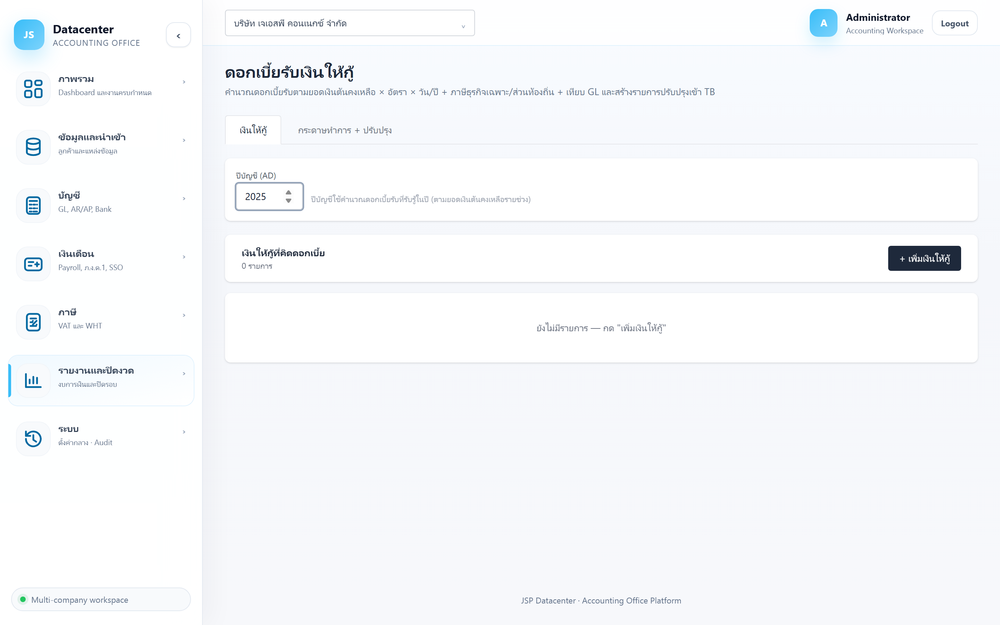

ดอกเบี้ยรับเงินให้กู้
คำนวณดอกเบี้ยรับจากเงินให้กู้ยืม (เช่น เงินให้กรรมการกู้) ตามสูตร เงินต้นคงเหลือ × อัตรา × วัน/ฐานวันต่อปี พร้อมคำนวณ ภาษีธุรกิจเฉพาะ + ภาษีส่วนท้องถิ่น และสร้างรายการปรับปรุงเข้างบ
เงินให้กรรมการหรือบริษัทในเครือกู้ยืม สรรพากรถือว่าต้องมีดอกเบี้ยตามราคาตลาด — กิจการต้องรับรู้เป็นรายได้และนำส่งภาษีธุรกิจเฉพาะด้วย ถ้าไม่บันทึก มักถูกประเมินเพิ่มตอนตรวจสอบ
1. การเข้าใช้งาน
- เลือกบริษัทลูกค้า ที่แถบด้านบน
- เปิดเมนู รายงานและปิดงวด → ดอกเบี้ยรับเงินให้กู้
- กรอก ปีบัญชี (ค.ศ.) ที่ต้องการคำนวณ
2. แท็บ “เงินให้กู้”

| คอลัมน์ | ความหมาย |
|---|---|
| ชื่อ/ผู้กู้ | ผู้กู้ เช่น ชื่อกรรมการหรือบริษัทในเครือ |
| อ้างอิง | เลขที่สัญญา/เอกสารอ้างอิง |
| อัตรา/ปี | อัตราดอกเบี้ยต่อปี (%) |
| ช่วงดอกเบี้ย / แก้ไข | ปุ่มท้ายแถว · รายการที่ปิดแล้วมีป้าย (ปิด) |
ฟอร์มเงินให้กู้
| ช่อง | คำอธิบาย |
|---|---|
| ชื่อ/ผู้กู้ · เอกสารอ้างอิง | ข้อมูลระบุตัวรายการ |
| อัตราดอกเบี้ย/ปี | อัตราตามสัญญาหรืออัตราตลาดที่ใช้อ้างอิง |
| ภาษีธุรกิจเฉพาะ (%) | อัตรา SBT ที่ใช้คำนวณจากดอกเบี้ยรับ |
| ส่วนท้องถิ่น (% ของ SBT) | ภาษีส่วนท้องถิ่นคิดจากยอด SBT อีกทอดหนึ่ง |
| ฐานวัน/ปี | ฐานวันที่ใช้หาร เช่น 365 หรือ 360 — ต้องตรงกับที่ตกลงในสัญญา |
| รายการเคลื่อนไหว (วันที่ · คำอธิบาย · จำนวน) | บันทึกการให้กู้เพิ่มและการรับคืน — ระบบใช้สร้าง ช่วงเงินต้นคงเหลือ |
| บัญชี GL ที่ผูก | ใช้ตอนสร้างรายการปรับปรุงและเทียบยอด |
ระบบไม่ได้คิดดอกเบี้ยจากยอดคงเหลือปลายปีอย่างเดียว แต่ แบ่งเป็นช่วง ๆ ตามวันที่เงินต้นเปลี่ยน แล้วคิดดอกเบี้ยแต่ละช่วงตามจำนวนวันจริง — บันทึกวันที่ให้กู้/รับคืนให้ครบ ดอกเบี้ยจึงจะถูกต้อง
ปุ่ม “ช่วงดอกเบี้ย”
เปิดตารางแสดงการคิดดอกเบี้ยทีละช่วง
| ส่วนที่แสดง | ความหมาย |
|---|---|
| เงินต้นต้นปี / เงินต้นปลายปี | ยอดคงเหลือหัวท้ายปี |
| ดอกเบี้ยรับในปี | ผลรวมดอกเบี้ยของทุกช่วง |
| รวมภาษีนำส่ง | ภาษีธุรกิจเฉพาะ + ส่วนท้องถิ่น |
| ตาราง: ตั้งแต่ · ถึง · เงินต้นคงเหลือ · วัน · ดอกเบี้ย | การคิดทีละช่วง — ตรวจได้ว่าเงินต้นและจำนวนวันถูกต้องหรือไม่ |
ถ้าขึ้น “ไม่มีช่วงดอกเบี้ยในปีนี้” แปลว่าไม่มีเงินต้นคงเหลือในปีนั้น
3. แท็บ “กระดาษทำการ + ปรับปรุง”
| คอลัมน์ | ความหมาย |
|---|---|
| เงินต้นต้นปี / ปลายปี | ยอดคงเหลือของแต่ละรายการ |
| ดอกเบี้ยรับ | ดอกเบี้ยที่ต้องรับรู้เป็นรายได้ในปีนั้น |
| ภาษีธุรกิจเฉพาะ | SBT ที่คำนวณจากดอกเบี้ยรับ |
| ส่วนท้องถิ่น | ภาษีส่วนท้องถิ่นที่คิดจาก SBT |
ด้านล่างมีตารางเทียบ ดอกเบี้ยคำนวณ กับ ตาม GL พร้อมคอลัมน์ ผลต่าง — ถ้าขึ้น “ไม่มีบัญชีที่ผูก” ให้ไปผูกบัญชีในฟอร์มก่อน
สร้างรายการปรับปรุงรับรู้ดอกเบี้ยรับ
- ติ๊กเลือกรายการ ที่ต้องการรับรู้ดอกเบี้ย
- กดปุ่ม สร้างรายการปรับปรุงรับรู้ดอกเบี้ยรับ
- ตรวจใบที่สร้างได้ที่ กระดาษทำการปิดงบ
ระบบคำนวณยอด SBT และส่วนท้องถิ่นให้ แต่ ไม่ได้ยื่นแบบ ภ.ธ.40 ให้ — ต้องยื่นและชำระกับสรรพากรเอง (รายเดือน ภายในวันที่ 15 ของเดือนถัดไป)
4. ปัญหาที่พบบ่อย
| อาการ | สาเหตุและวิธีแก้ |
|---|---|
| ทะเบียนว่าง | ต้องบันทึกเอง — ข้อมูลนี้ไม่ได้มาจาก Express |
| ดอกเบี้ยน้อยกว่าที่คิดเอง | รายการเคลื่อนไหวไม่ครบ ระบบจึงคิดจากเงินต้นที่ต่ำกว่าจริง — ตรวจวันที่และจำนวนในฟอร์ม |
| ดอกเบี้ยต่างกันเล็กน้อยจากที่คำนวณเอง | ฐานวัน/ปีไม่ตรงกัน (365 vs 360) — แก้ให้ตรงกับสัญญา |
| ขึ้น “ไม่มีช่วงดอกเบี้ยในปีนี้” | ปีนั้นไม่มีเงินต้นคงเหลือ หรือรายการเคลื่อนไหวอยู่นอกช่วงปีที่เลือก |
| สร้างรายการปรับปรุงไม่ได้ | ยังไม่ได้ผูกบัญชี GL ที่จำเป็น |